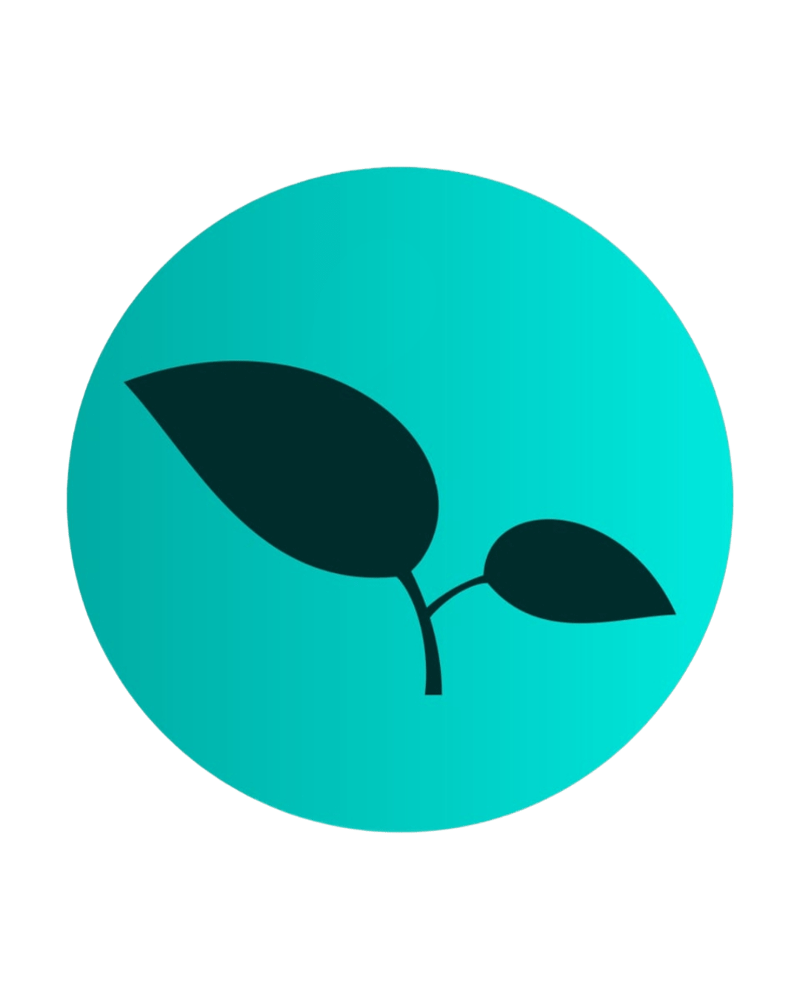

João Guilherme Marques
Full Stack Web Developer
Desenvolvedor Web Full Stack apaixonado por transformar ideias em código funcional. Atuo em todas as etapas do desenvolvimento, do front ao back-end, garantindo que cada projeto seja robusto e intuitivo. Estou sempre explorando novas tecnologias para criar soluções digitais modernas, eficientes e que gerem resultado real.
Competências & Tecnologias
Meus Projetos
GitHub & Portfólio biobrikss.net
Site institucional completo. Desenvolvimento Full Stack WordPress, otimização de performance e gestão de conteúdo.
Visitar Site Oficial →Julia IA
Assistente virtual voltada para psicologia. IA desenvolvida para triagem e suporte emocional inicial.
Ver Repositório →Calculadora JS
Aplicação funcional desenvolvida com lógica JavaScript pura e interface moderna.
Ver Código →Portal de Filmes
Interface web imersiva para catálogo de filmes e séries, com foco em UX/UI.
Ver Código →E-commerce Simple
Simulação de loja virtual (Front-end), aplicando conceitos de grid e responsividade.
Ver Código →Cadastro de Alunos
Sistema de gestão escolar para cadastro e controle de alunos (CRUD), focado em organização de dados.
Ver Código →Loja Virtual WP
E-commerce robusto desenvolvido em WordPress/WooCommerce, com integração de pagamentos.
Ver Projeto →